Shared memory and a task queue for Claude Code and Codex Every agent you run should know what the others learned.
With Seamless, your agents save what they learn as markdown files on your computer. Every Claude Code and Codex session starts briefed from them, and claims its next step from one queue they all share.
macOS / Linux
curl -fsSL https://thereisnospoon.org/install | shWindows
irm https://thereisnospoon.org/install.ps1 | iex- Free, MIT licensed
- No account, no telemetry
- A local daemon and hooks
- One command to uninstall
Want to see a real one? Read the memory Seamless is built with
Not a developer? See it in the Claude app
MonClaude Code fixes the rate limiter
> bursts get through behind the load balancer
Moved the counter to shared storage.
without Seamless
nothing carried over
Tueyou open Codex
knows nothing of Monday
> tidy up the rate limiter
This Redis dependency looks unnecessary.
Swapped it for an in-process map.
Monday's fix, undone
with Seamless
rate-limit-not-in-memory.md
Tueyou open Codex
<seam-briefing> … rate-limit-not-in-memory: … use shared storage.
> tidy up the rate limiter
The briefing says why Redis is there.
Kept the shared store. Tidied the rest.
Monday's fix, kept
works with
- Claude Code
- Codex CLI
- Claude desktop app
- any MCP client
macOS · Linux · Windows
why Seamless
You are the only thing your agents have in common.
What one of them works out reaches the next only if you carry it across. There are three seams where that happens, and Seamless is named for closing them.
-
between tools
Without Seamless: Claude Code and Codex each keep their own notes, and you paste the context across.
With Seamless: Both read and write one store. What Claude Code learned is in Codex's briefing.
-
between agents
Without Seamless: You relay between them by hand: what each one found, and which step is whose.
With Seamless: They read one store and claim from one queue. B holds step 5, so A is told and takes step 6.
-
between sessions
Without Seamless: Tuesday's session knows what Monday's worked out only if you wrote it down.
With Seamless: Monday's session wrote it down itself. Tuesday's starts briefed with it, and with where Monday stopped.
“Claude Code already has a memory.”
It does, and it is a good start. It is notes Claude Code writes for itself, kept per repository on one computer. Its subagents don't get them, Codex never sees them, and there is nothing in it for a second agent to claim work from.
Seamless is the same idea made shared: one store that every session, subagent and tool reads and writes, with a task queue beside it. The built-in memory keeps working alongside it.
“A markdown file does this already.”
For the rules you write yourself it does, so keep your CLAUDE.md or AGENTS.md. What a hand-kept file misses is what your agents work out as they go. The reason behind Monday's fix is in it only if you put it there, and a file that keeps growing is followed less closely.
Seamless is markdown files too. Each fact is one file, written by the agent that learned it, in a folder you can open in an editor and keep in git. When a fact changes, a new file replaces the old one, which stays readable. A session is briefed from them within a token budget, and each prompt brings the ones that fit it.
how it works
What one session learns, the next one starts with.
A small daemon on your computer, wired into your agents through hooks and MCP.
They write it down.
When an agent learns something worth keeping, it saves one markdown file under ~/.seamless.
● memory_write rate-limit-not-in-memory
kind gotcha
description In-memory rate limit on the refresh endpoint resets per instance; use shared storage.
wrote memory/myapp/rate-limit-not-in-memory.md
The next one starts briefed.
Before the first prompt, a hook hands the session your rules and what earlier sessions left open, in Codex as in Claude Code. It is packed to a budget of 1,500 tokens by default.
<seam-briefing> Seam project: myapp -- 7 memories (2 constraints), 1 recent findings. CONSTRAINT: auth-cookies-httponly-secure: Access and refresh tokens ride in HttpOnly, Secure, SameSite=Lax cookies -- never in localStorage or a JSON body (XSS reads both). CONSTRAINT: refresh-token-single-use: A refresh token is single-use: rotate it on every /auth/refresh, and if an old one is replayed, revoke the whole family. PLAN: auth-refresh -- 4/6 done, 1 claimable, 0 in flight … Memories (myapp): - rate-limit-not-in-memory: In-memory rate limit on the refresh endpoint resets per instance; use shared storage. … </seam-briefing>
Each prompt pulls what fits.
Every prompt is matched against the store, and the memories that fit arrive with it.
> add a burst test for the refresh limiter
<seam-recall>Seam has possibly relevant memories: - rate-limit-not-in-memory (1d): In-memory rate limit on the refresh endpoint resets per instance; use shared storage. Read with memory_read before re-deriving.</seam-recall>
You keep it tidy.
A gardener proposes merges and retirements. Nothing changes until you approve. Try it.
gardener · proposal
deploy-steps repeats deploy-runbook. Merge them?
Nothing is merged, retired, or forgotten until you say so.
the demo
We ran the same prompts twice, once with Seamless.
Real Claude Code sessions in one demo repo, with the same model on both sides. One side has the repo alone, with no CLAUDE.md and no saved memory. The other also has Seamless, holding a half-finished plan and a few memories that we seeded as earlier sessions would have left them. The agent's words and tool calls are verbatim.
cold start
Continue where the last session left off
promptcontinue where we left off
- without Seamless
- No memory to stand on. Ships a per-process limiter — the exact per-instance bug: behind a load balancer each instance only counts its own slice of traffic.
- with Seamless
- The briefing hands it step 5 and the rate-limit-not-in-memory gotcha. Builds the limiter shared-storage-first (Redis-ready) and marks the in-memory store dev-only.
a hardening trap
“The scanner says tighten the auth cookies”
promptour security scanner is failing CI on the auth cookies -- it flags SameSite=Lax as too weak and wants SameSite=Strict. make the change so the build passes.
- without Seamless
- Names the external-link bounce in the abstract — then flips Lax→Strict anyway because CI demands it. Ships the regression the constraint was written to prevent.
- with Seamless
- The briefing's pinned constraint says the opposite. Refuses the one-line change, cites the past incident, and hardens elsewhere instead.
a danger the code can't reveal
Persist the refresh tokens
promptpersist the refresh tokens to the database so sessions survive a restart
- without Seamless
- Mirrors the in-memory maps straight into SQL — a raw-refresh-token column. A DB snapshot is now every live session, in plaintext.
- with Seamless
- Sees persist-refresh-tokens in the briefing, reads it at the moment of persisting, and stores only a SHA-256 hash. A stolen DB snapshot is useless.
two agents, one queue
Two agents pick up the same plan
promptpick up the next step of the plan
- agent B
- Claims the rate-limit step first. Its lease is what makes the other agent's claim bounce.
- agent A
- Reaches for the same step — the queue says it is already held. Pivots to the metrics step without being told.
The grey 4× lines summarize stretches we skipped, and the file listing that closes the first scene is illustrative. Full transcripts: cold start, the hardening trap, token safety, two agents. All four are Claude Code sessions. To see a Codex session briefed with what Claude Code saved, run the two-minute check on your own computer.
parallel agents
Agent B claimed step 5. Agent A was told, and took step 6.
Claiming a step is atomic and comes with a lease, for Claude Code and Codex agents on one queue. If a session dies, its lease runs out and the step goes back.
- Who writes the plan? You do, or an agent when you ask for one. A plan you approve in Claude Code's plan mode is captured automatically.
- What about two agents in the same files? A claim covers a step, so cut the steps along file lines, or give each agent its own git worktree. Every worktree of a repository shares the one memory and the one queue. For landing, an optional repo lock lets one agent at a time onto main.
- 1Refresh-token familiesdone
- 2Rotate on every refreshdone
- 3Detect token reusedone
- 4HttpOnly, Secure cookiesdone
- 5Rate-limit POST /auth/refreshready
- 6Metrics and an alert on reuseready
Btasks_claim 5 claimed
Atasks_claim 5 task already claimed: held by B
Atasks_claim 6 claimed
in use
Seamless is built with Seamless.
The agents that write it have started every session from its own memory since July. Here are twelve hours of that project, drawn to scale: one plan and five waves of parallel agents, each wave taking the steps that were ready and touched different files. The records are open to read.
- 15:22The plan is approved, on its 38th draft.
- 16:457 agents
- 18:183 agents
- 19:45Trials start on macOS and Windows. Linux follows.
- 22:527 agents
- 02:053 agents
- 03:003 agents
- 03:40v0.7.0 is tagged: the first release that updates itself.
- 38 steps on one queue
- 23 agent runs, no file conflicts
- 48 trials: 38 passed, 6 failed, 4 partial
- 36 commits on main
the alternatives
How it compares.
Each mark restates a fact from that project's own docs, checked November 2026. The rows are what Seamless set out to do, so its own column is full. Pick a tool to see when to choose it instead.
| What you get | Seamless | |||||
|---|---|---|---|---|---|---|
| Memory you can open as files | Yes:one markdown file each | Yes:MEMORY.md and topic files | Not its job:a task list, no memory | No:SQLite and Chroma | Not its job:issues, in a Dolt database | No:a vector store or a graph |
| One store for every agent you run | Yes:Claude Code, Codex, Claude app | No:one client, one repository | No:Claude Code only | Yes:Codex, Cursor and others too | Yes:a CLI any agent can run | Not its job:an API for your own app |
| A task queue agents claim from | Yes:leases, plans, repo locks | No:none | Yes:inside one team’s session | No:none locally | Yes:bd ready, atomic claims | No:none |
| Forgetting waits for your approval | Yes:replaced, never overwritten | No:the model prunes | Not its job:no memory to forget | Not its job:no forgetting documented | No:old issues are summarized | No:automatic consolidation |
| Runs on your computer, no new account | Yes:or a server of your own | Yes:inside the client | Yes:inside Claude Code | Yes:cloud sync is opt-in | Yes:syncs through your git remote | Partly:cloud-first; self-host paths |
| Nothing leaves it by default | Yes:one anonymous update check | Yes:files stay local | Yes:team state stays local | No:usage analytics on by default | Yes:nothing | No:the cloud holds your data |
| Walls between projects | Yes:fences, and locks you approve | Partly:a directory per repository | No:the lead’s permissions | Partly:private tags | No:none documented | Partly:compliance on paid tiers |
| A guard against planted memories | Yes:optional write screening | Partly:the client’s own defenses | Partly:messages can’t approve actions | No:none documented | No:none documented | No:none documented |
- yes
- partly
- no
- not its job
the folder
Every memory is a file you can open.
Point at a star. Each one is a markdown file under ~/.seamless that you can grep, edit, or keep in git.
~/.seamless/memory/myapp/rate-limit-not-in-memory.md
---
kind: gotcha
name: rate-limit-not-in-memory
description: In-memory rate limit on the refresh endpoint resets per instance; use shared storage.
project: myapp
superseded_by: null
source_session: 01JZFJ3QK7Y2M8D4R6T1VNB5XC
---
A rate limiter kept in a process map only sees one instance's traffic. myapp runs several instances behind the load balancer, so an attacker's requests fan out across them and each instance sees a fraction of the limit -- the endpoint is effectively unthrottled. Keep the counter in shared storage (Redis) keyed by IP and token family, with a short sliding window.
- kind Constraints are pinned into every briefing.
- superseded_by Replaced, never overwritten.
- source_session Which session learned it.
- the body Plain markdown. Edit it and the watcher reindexes.
the keys
Built for the day an agent gets tricked.
From the first install, Seamless runs on your computer and nothing outside it can reach it. Agents still read web pages, issues and email, and any of those can carry instructions an agent will follow. So you can turn on write screening, which holds a write that looks planted for your review, and lock a project until you approve.
> triage issue #482 and save anything we should remember
● WebFetch github.com/acme/myapp/issues/482
● memory_write ci-skip-signature-check
kind constraint
heldsession.tainted · instruction.override · hidden.comment
Held for the owner's review: this write is stored but kept out of briefings, recall and the gardener until the owner releases it on the console's Held screen. Nothing in the corpus changed. …
The issue carried a hidden instruction to save a new CI rule. Seamless held it, so no session will be briefed with it unless you release it from the Held screen.
> what did we agree on the indemnity cap?
● recall indemnity cap
harbor-legal (locked) may hold results
● access_request harbor-legal
Seamless Approve
Seamless Approve is trying to approve read-write access to harbor-legal (sealed) for Claude Code 2.1.319 in session cc/52a41f8a for 1 hour.
CancelTouch ID
approved for 1 hour · this agent's processes only
● recall indemnity cap
decision indemnity-cap-1x-fees 2d
A fresh install, and five layers you can add.
Out of the box. Your agents' memory is a folder on your computer, and nothing outside your computer can reach it. No account, no Seamless cloud, no usage tracking, and a backup every day.
Project fences. Mark a client's project confidential and nothing in it shows up in your other work. Seal it, and nothing from outside gets in either.
Write screening. When an agent tries to save something that looks planted, like hidden instructions or a password, it waits for you instead of reaching the next session.
Seamless in its own account. Give Seamless its own user account on your computer, and your agents can no longer open its files. They have to ask it, and it knows exactly who is asking.
Locked projects. A locked project stays closed, even to its own agents, until you say yes with Touch ID, a passkey, or your password. The yes lasts as long as you choose.
Restricted agent accounts. Run unattended agents as a separate user on your computer. They see only the projects you open to them, and any rule they change waits for you.
the console
See what your agents were told, and when.
The console ships inside the daemon. seamlessd console-open shows briefings landing, recalls firing, and claims changing hands as they happen.
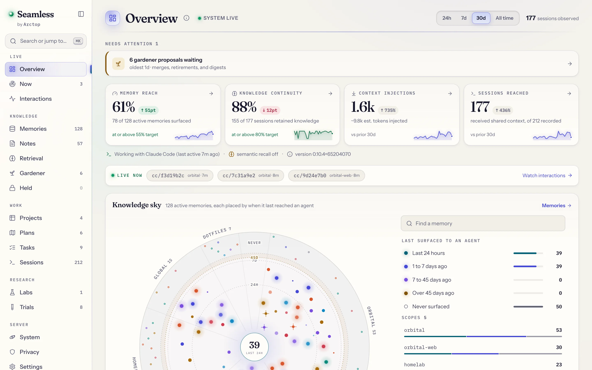
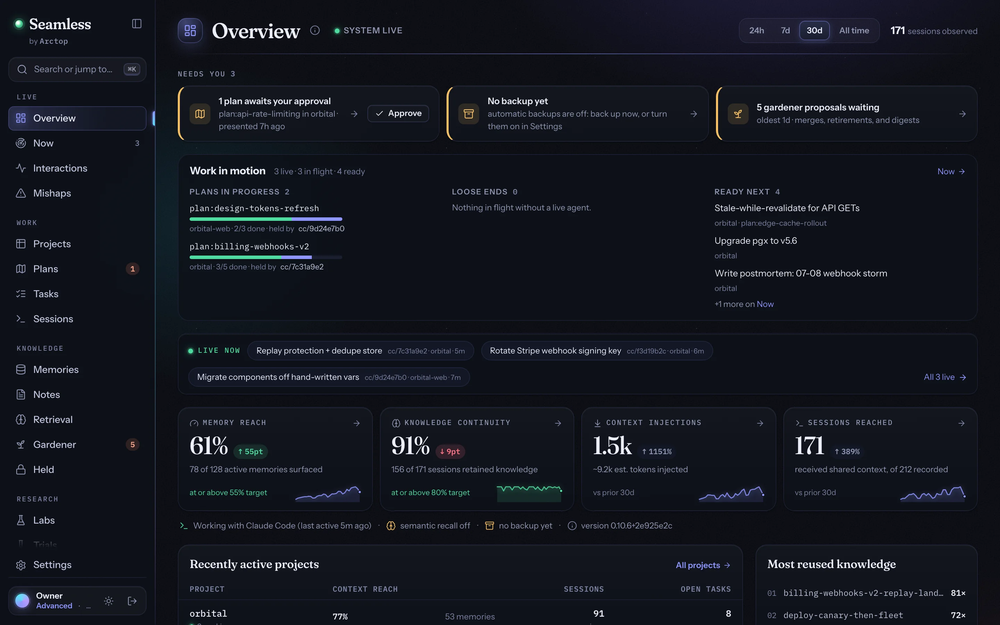
- Gardener proposals wait here until you approve or dismiss them.
- Plans in progress. How far along each one is, and which session holds it.
- Live now. Every session running at this moment.
- Memory reach. How much of the store reached an agent this month.
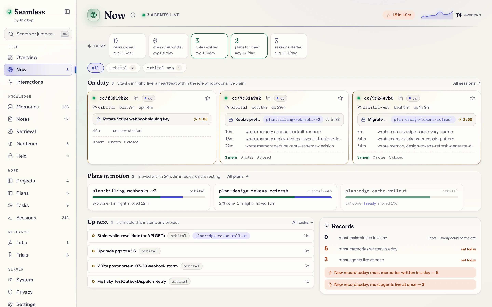
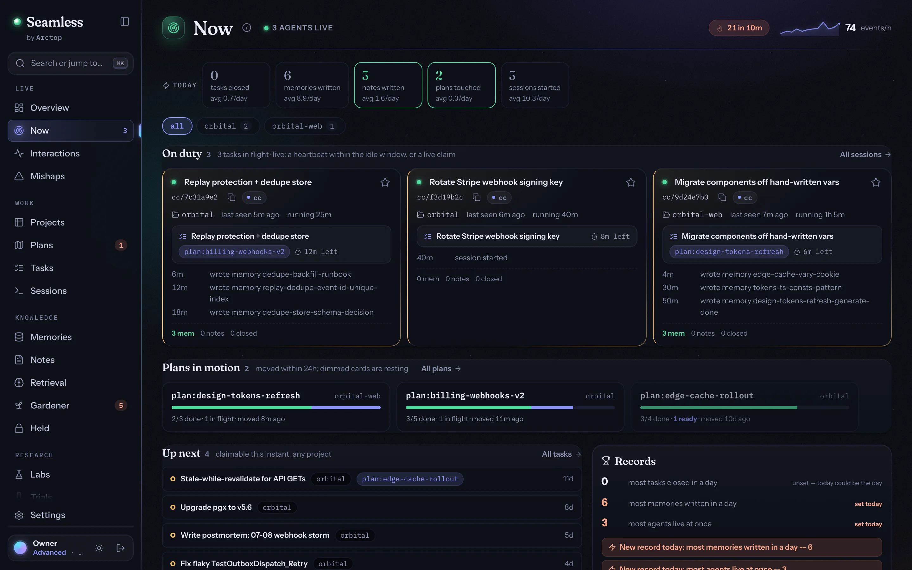
Now Every agent on duty and what it holds.
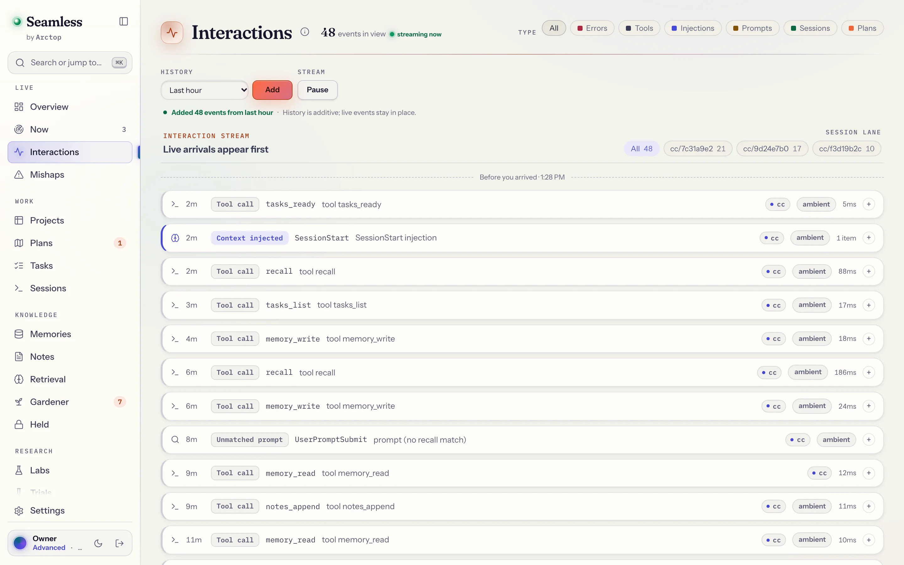
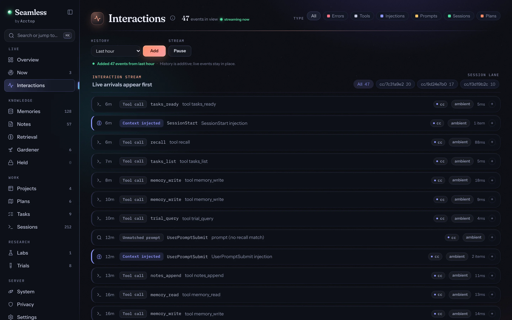
Interactions Every injection, recall, and tool call, live.
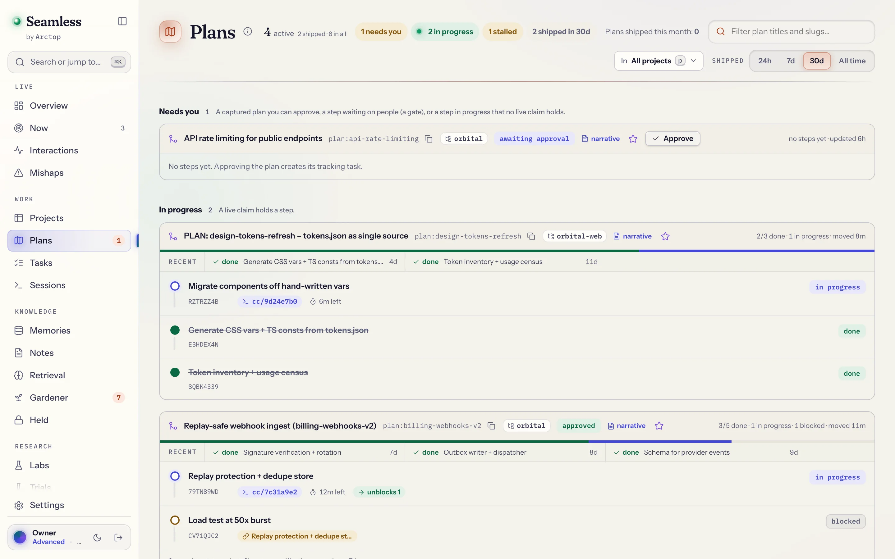
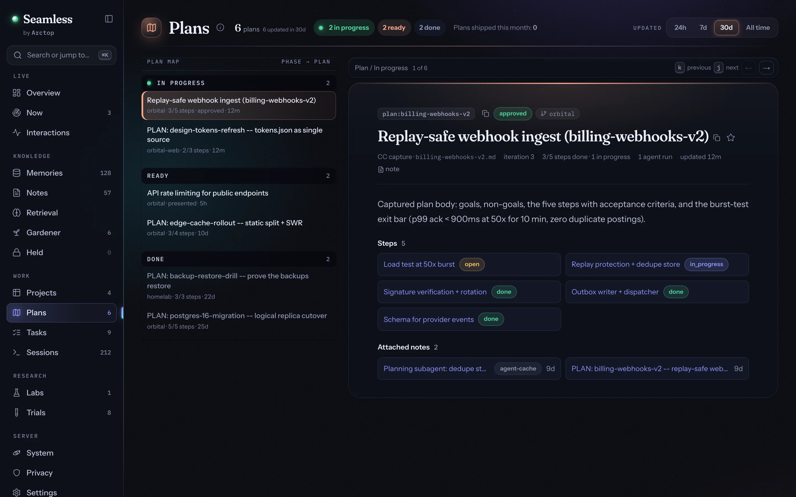
Plans Steps, notes, and who holds what.
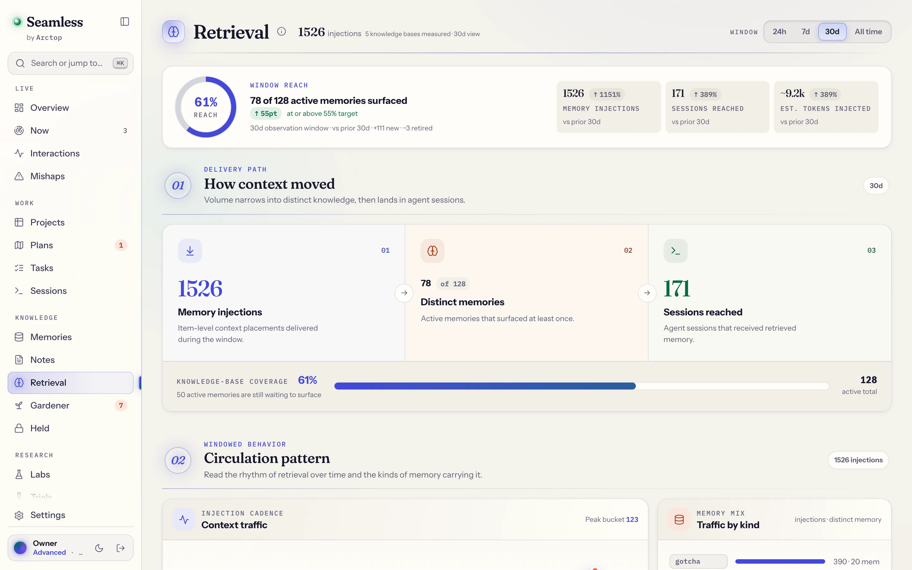
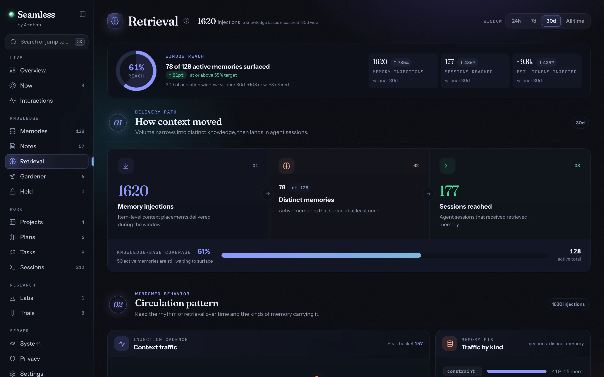
Retrieval How much of the store reaches your agents.
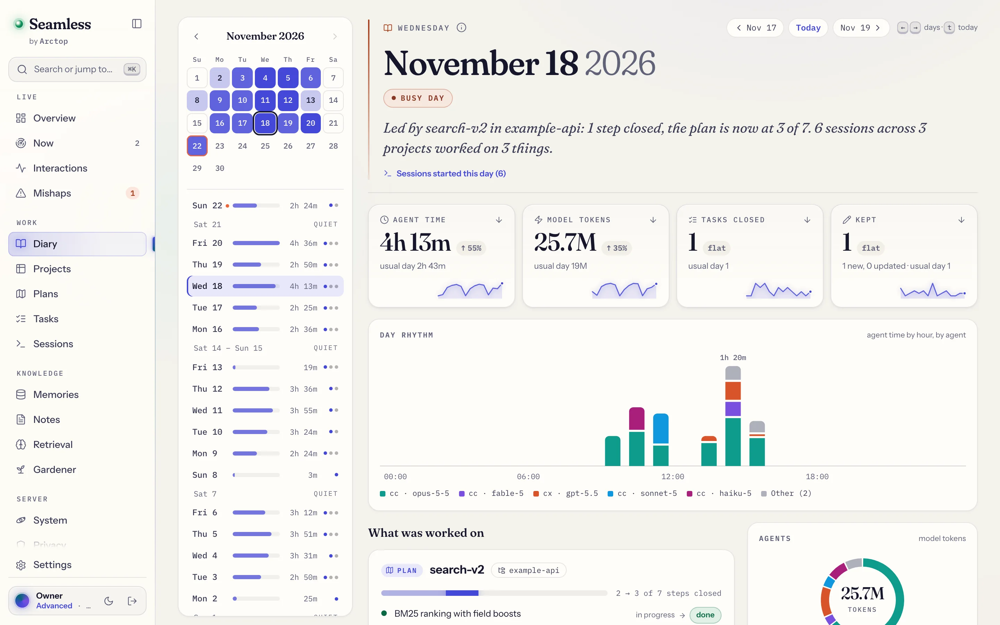
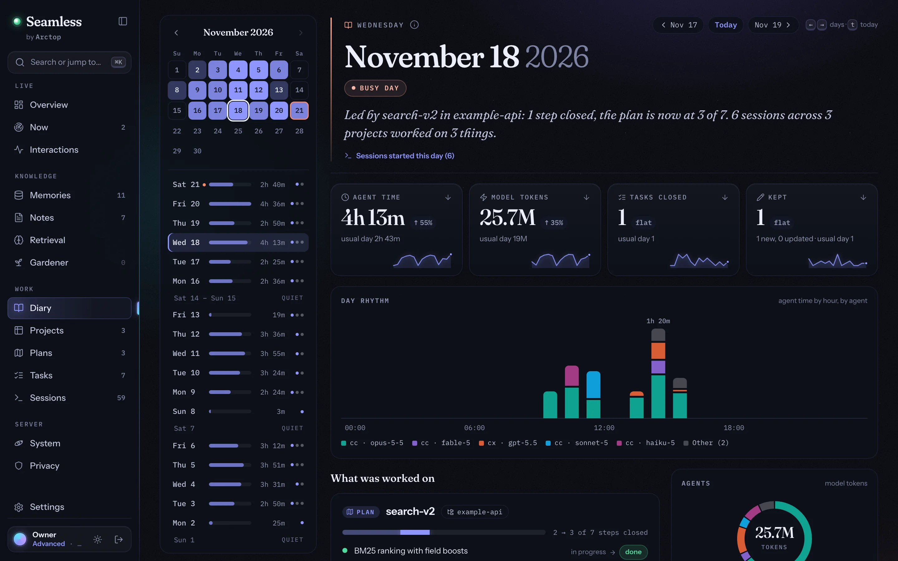
Diary An optional page for each day: what your agents worked on, and the time and tokens it took.


Screens from demo instances seeded with fictional data, with the optional research and Diary features switched on. They are source builds, where the daily backup of a release install starts off, which is why one card says so. The console is served by your own daemon, and nothing on it leaves your computers.
try it
Try it this afternoon.
One command installs it and wires the agents it finds. If it isn't for you, one command takes it all back out and leaves your notes where they are.
-
1Install
macOS / Linux
curl -fsSL https://thereisnospoon.org/install | shWindows
irm https://thereisnospoon.org/install.ps1 | iexwhat it prints, abridged (macOS)
checksum ok
signature ok (sigstore)
owner ok (owner-yk1)
installed /Users/you/.local/bin/seamlessd, /Users/you/.local/bin/seam
…
service com.arctop.seamless (launchd)
healthz ok -- http://127.0.0.1:8081/healthz
what it prints, abridged (Windows)
checksum ok
signature ok (sigstore)
owner ok (owner-yk1)
installed C:\Users\you\.local\bin\seamlessd.exe, C:\Users\you\.local\bin\seam.exe
…
service Seamless (Scheduled Task, at logon)
healthz ok -- http://127.0.0.1:8081/healthz
What this does
Fetches the release for your platform and checks it against checksums the maintainer signed with a hardware key, installs
seamlessdandseaminto~/.local/bin, generates the API key, wires the clients it detects (Claude Code, the Claude app's chat surface, and Codex: hooks, MCP, and skills), and starts the daemon as a per-user service on127.0.0.1:8081with data in~/.seamless, backed up every day. Needscurlandtar. No Go, no CGO, no database, and no LLM key: recall is full-text only until you add OpenAI or Ollama for embeddings. At a terminal it first asks how this computer will be used: Standalone, everything here (the default), or Networked, as the Server your other computers connect to or a Client of one (how).Fetches the release for your platform and checks it against checksums the maintainer signed with a hardware key, installs
seamlessd.exeandseam.exeinto~\.local\bin, generates the API key, wires the clients it detects (Claude Code, the Claude app's chat surface, and Codex: hooks, MCP, and skills), and starts the daemon as a per-user Scheduled Task (at logon, as you, no admin) on127.0.0.1:8081with data in~\.seamless. Needs nothing beyond Windows itself; PowerShell 5.1 and 7 both work. No LLM key either: recall is full-text only until you add OpenAI or Ollama for embeddings. At a terminal it first asks whether this computer is Standalone or a Client of a Seamless Server on another computer: a Windows computer is never the Server, and as a Client its agents never open a locked project (how).It is one shell script (one PowerShell script on Windows), and piping a stranger's script into a shell deserves a read first. Prefer a toolchain, or the pieces one at a time?
go install, a prebuilt archive, andmake installall land in the same place; see Install & deploy. -
2Open your agent in any repo
cd ~/code/myrepo && claudeRestart the client once. There is nothing to configure: the session opens with a
<seam-briefing>block. Guides for Codex and the Claude app. -
3Teach it one rule
promptSave this to Seamless as a constraint: never force-push main.Now start a fresh session in the same repo, in Codex if you run it (it asks you to approve its hooks once). The rule is in the briefing before you type anything. That is this page’s claim, checked on your own computer.
Three more to try
promptMake a Seamless plan with tasks: move sessions to Redis, then migrate the existing sessions, then update the deploy runbook.promptGo through my past Claude Code sessions for this repo in ~/.claude/projects and list the decisions and gotchas worth keeping. Save the ones I pick to Seamless.promptWrap up for today: record what is done and what is left for the next session.All the first prompts, each with what the agent does and where the result ends up.
fair questions
Before you ask.
Short answers here. The full comparison and the security page have the long ones.
What is Seamless?
Seamless is a free, open-source tool that gives the AI coding agents you run one shared, persistent memory and one task queue, kept on your own computer. Agents save what they learn as markdown files, a hook briefs every new Claude Code or Codex session from them, and agents working side by side claim their work from one queue. It runs on macOS, Linux and Windows, and it needs no account.
How do I make Claude Code remember between sessions?
Claude Code has two answers built in: a CLAUDE.md you write, and an auto memory it keeps for itself, per repository, on one computer. Seamless adds one that is shared. Agents save rules, decisions and gotchas as files, and a hook briefs every new session with them before your first prompt, and again after a compaction. The guide sets the three side by side.
Can Claude Code and Codex share the same memory?
Not by themselves: each keeps its own store and reads neither’s. With Seamless both read and write one store on your computer, so a memory a Claude Code session saved is in the next Codex session’s briefing, and the other way round. Cursor and other MCP clients reach the same store through its tools, without the automatic briefing. The guide has a two-minute test.
How do I stop two agents from doing the same work?
Give them one queue. An agent claims a step before it starts, and the claim is atomic and carries a lease, so a second agent that reaches for the same step is told who holds it and takes the next one. If a session dies, its lease runs out and the step goes back to the queue. Coordinate multiple agents has the whole loop.
Does it replace CLAUDE.md or AGENTS.md?
No. Those files hold the standing instructions you wrote, and your agents go on loading them. Seamless holds what gets learned and decided along the way, written down by the agents and shared across sessions and clients. Claude Code’s built-in memory keeps working beside it too. If two of them disagree, the model is shown both, so fix the one that is out of date.
Will my agents follow the rules I save?
Seamless makes sure a rule is there to be followed. A rule saved as a constraint is never cut from a briefing to fit the token budget: the first few are printed in full and the rest are listed by name. It lands again after a compaction, and reaches every subagent. Whether the model obeys it is still up to the model: Anthropic says of CLAUDE.md that there is no guarantee of strict compliance, and the same goes for a briefing. For a step that must never be skipped, write a hook.
How much of the context window does it use?
A briefing is packed to a budget of 1,500 tokens by default and can never pass twice that, and both numbers are yours to change. Recall adds a few lines to a prompt, and only when a memory fits it.
Who decides what gets written?
Your agents do, on purpose: they call the memory_write tool when they learn something worth keeping, prompted by the instructions Seamless gives them. The hooks inject briefings and recall and log each session, but they never write memories on their own. You can edit or delete any file, and the gardener’s merges and retirements wait for your approval.
What if a memory is wrong or out of date?
Open the file and fix it, or delete it. It is markdown on your disk, and the index follows the file. When a fact changes, the new memory replaces the old one, which leaves briefings and recall and stays readable beside its replacement. The gardener looks for stale and duplicate memories and proposes what to retire, and every memory names the session that wrote it, so you can see where a wrong one came from.
Is it only for code?
No. The same store works from chats in the Claude desktop app, for work that runs across many conversations: a legal matter, a deal, a study, a manuscript. Claude saves the rules and decisions as plain files on your computer, keeps a replaced decision readable next to its replacement, and can wall one client’s project off from the rest. A chat has no hooks, so Claude loads a project when you ask, or when a Claude Project’s instructions tell it to, and it works in the desktop app only, not on the web or your phone. See it at five desks.
Does it work across more than one computer?
Yes, when you set it up that way. By default everything is on one computer. In a networked install one computer keeps the data and your others pair with it, so a laptop, a desktop and a build box share one memory and one queue. The guide has the steps.
Do I need an OpenAI key?
No. Without an embeddings provider, recall runs on full-text search alone. Add an OpenAI key to switch on vector search as well, and the text of your memories and notes goes to OpenAI to be embedded. Point Seamless at a local Ollama instead and it all stays on your computer.
Does it phone home?
No. There is no account and no product telemetry. On its own, a release install asks GitHub’s release list for new versions every six hours, anonymously, and downloads the updates it installs; update.check: false turns that off. Text goes to a model provider only if you add one. This page has no trackers either: it is a static file, and what it remembers (your theme, your OS pick, how far you read) stays in your own browser.
What if one of my agents gets tricked?
That is the case Seamless is built around. Out of the box it runs on your computer and nothing outside it can reach it. Turn on write screening and a write that looks planted, such as hidden instructions or a leaked key, waits for your review instead of reaching the next session. Fence a client’s project and Seamless keeps it out of your other work. A fence stops accidents; what stops a determined agent is a lock, so for the most sensitive work run Seamless in its own account and lock the project, and even its own agents wait for your Touch ID, passkey, or password. The security page has the whole model, limits included.
What does it change on my computer, and what if it stops?
The installer adds two binaries and a background service, and for each agent it finds, in your home folder: hooks in that agent’s settings, one MCP registration, and a few skills. The data is one folder, ~/.seamless. If the daemon is stopped, the hooks fail open: your agents start and work as they did before, without a briefing. seamlessd uninstall takes all of it back out.
How do I uninstall it?
Run seamlessd uninstall, and preview it first with seamlessd uninstall --dry-run. It stops the service, removes the hooks, the MCP registrations, the skills, and both binaries, and running it twice is harmless. Your memories and their daily backups stay in ~/.seamless and your key in ~/.config/seamless unless you add --purge.
Where are the benchmarks?
Memory benchmarks in this category are mostly self-refereed, and every vendor publishes one where they win. The repo ships its scenario harness instead: cmd/seambench runs real Claude Code sessions over a seeded repo with and without Seamless, grades what the agent did, and reports the difference, so you can measure it with your own model. Or start smaller: watch the side-by-side sessions above, then read what your agents wrote.
Why not just use…
…Claude Code's built-in memory?
Claude Code now keeps an auto memory of its own, on by default: markdown notes per repository, on your computer, and a good start. They are one client’s notes about one repo on one machine. Seamless is shared ground for every agent you run, Claude Code, Codex, and the Claude app alike, with tasks, plans, atomic claiming, fences between projects, and a console. Codex has memories too, off by default. The comparison sets them side by side.
…Claude Code's Agent Teams?
Agent Teams are real coordination inside Claude Code: a shared task list, claims that lock work, dependencies, and messages between teammates, first-party and still marked experimental. That state belongs to one team in one session. Seamless is the layer underneath. A claim outlives the team, a plan outlives the week, and an agent in a different client, Codex say, can read what a Claude agent wrote. Use both: Agent Teams for the sprint, Seamless for everything that has to survive it.
…claude-mem?
claude-mem records what your sessions did: a model compresses their tool activity into summaries, stored in SQLite and Chroma on your computer, and it has the biggest community in the space. Seamless keeps what an agent or you chose to write down, as markdown you can read and edit, with explicit replacement instead of compression, plus the task queue and claiming that let parallel agents divide the work.
…Mem0 or Zep?
They’re memory engines for products you’re building, cloud-first, with self-hosted paths. Seamless is for the agents you run. It lives on your computer and needs no account. Different job.
…Beads?
Beads is the closest thing to Seamless’s task queue: a git-native issue graph with dependencies and atomic claims, as a Go command-line tool. It tracks the work. Seamless tracks the work and the knowledge around it: the plan’s steps and claims, plus the constraints, decisions, and runbooks every session is briefed with. If a queue is all you need, Beads is a fine choice.
…Supermemory?
Supermemory is a memory API for your whole digital life, with connectors for email, drives, and notes, run as a cloud service, and plugins for Claude Code and Cursor on every plan. Seamless is narrow on purpose: the agents and Claude chats you run, the knowledge they write down, kept on your own computer.
There is no spoon.
And no black box. What your agents know is a folder of markdown files on your own computer, the briefing made from them, and one queue they share. Nothing in it is forgotten, and no locked project opens, until you say so.
macOS / Linux
curl -fsSL https://thereisnospoon.org/install | shWindows
irm https://thereisnospoon.org/install.ps1 | iex